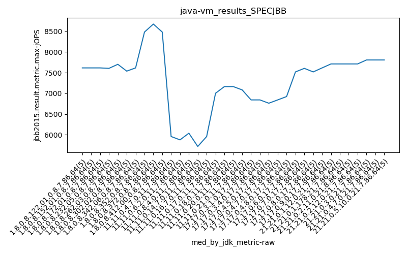

java- SPECJBB
Context at bottom
/home/jvanek/git/benchmarks-in-nested-virtualisation-toolchain/final_results/vm_results/vm_results_RADARGUNs3
java-
SPECJBB
/home/jvanek/git/benchmarks-in-nested-virtualisation-toolchain/final_results/vm_results/vm_results_RADARGUNs1
java-
SPECJBB
/home/jvanek/git/benchmarks-in-nested-virtualisation-toolchain/final_results/vm_results/vm_results_DACAPO
java-
SPECJBB
/home/jvanek/git/benchmarks-in-nested-virtualisation-toolchain/final_results/vm_results/vm_results_JMH
java-
SPECJBB
/home/jvanek/git/benchmarks-in-nested-virtualisation-toolchain/final_results/vm_results/vm_results_J2DBENCH
java-
SPECJBB
/home/jvanek/git/benchmarks-in-nested-virtualisation-toolchain/final_results/vm_results/vm_results_SPECJBB
java-
SPECJBB
vm_results_SPECJBB
- vm_results_SPECJBB - max-jops
- vm_results_SPECJBB - critical jops
vm_results_SPECJBB - max-jops
Expected number of java- JDKs: 19
1st avgmed_alljdks_metric:
/home/jvanek/git/benchmarks-in-nested-virtualisation-toolchain/final_results/result_processing.py /home/jvanek/git/benchmarks-in-nested-virtualisation-toolchain/final_results/vm_results/vm_results_SPECJBB jbb2015.result.metric.max-jOPS False
values: [7781, 7519, 7808, 7519, 7616, 7616, 7519, 7519, 7712, 7616, 7459, 7616, 7712, 7616, 7616, 7423, 7605, 7712, 7712, 7519, 7519, 7703, 7712, 7616, 7712, 7538, 7614, 7326, 7519, 7712, 7631, 7519, 7616, 7802, 7616, 6054, 6187, 5957, 5635, 5876, 5635, 5715, 5876, 5957, 6118, 6037, 6254, 6198, 5796, 5876, 5716, 6440, 5876, 5635, 5715, 5957, 5796, 6037, 5957, 6187, 6842, 6842, 6842, 6842, 6842, 6842, 6842, 6762, 6842, 6842, 6842, 6762, 6923, 6762, 6681, 6923, 6842, 6762, 6923, 6762, 6923, 6762, 6923, 6842, 6923]
Expected number of iterations: 5
final number of values: 85 out of 95
Pass rate: 89.5%
values: (5635, 7808, 6891.2, 6842)

** accuracy from all jdks and runs
more is better
MIN: 5635
MAX: 7808
AVG: 6891.2
MED: 6842
Relative differences 1:
MIN-MAX: 28.0 %
MIN-AVG: 18.0 %
MIN-MED: 18.0 %
MAX-MIN: -39.0 %
MAX-AVG: -13.0 %
MAX-MED: -14.0 %
AVG-MED: -1.0 %
stored to java-.properties. sort | uniq that!
2nd avgmed_by_jdk_metric:
values: [7648.6, 7596.4, 7603.8, 7594.2, 7652.4, 7541.8, 7636.8, 5941.8, 5860.2, 6032.2, 5876.4, 5986.8, 6842.0, 6826.0, 6794.0, 6842.4, 6874.6]

values: [7616, 7616, 7616, 7605, 7703, 7538, 7616, 5957, 5876, 6037, 5716, 5957, 6842, 6842, 6762, 6842, 6923]

values: (5860.2, 7652.4, 6891.2, 6842.4)
values: (5716, 7703, 6886.117647058823, 6842)

** accuracy from all jdks where runs were avged
more is better
MIN: 5860.2
MAX: 7652.4
AVG: 6891.2
MED: 6842.4
Relative differences 1:
MIN-MAX: 23.0 %
MIN-AVG: 15.0 %
MIN-MED: 14.0 %
MAX-MIN: -31.0 %
MAX-AVG: -11.0 %
MAX-MED: -12.0 %
AVG-MED: -1.0 %
stored to java-.properties. sort | uniq that!
** accuracy from all jdks where runs were medianed
more is better
MIN: 5716
MAX: 7703
AVG: 6886.117647058823
MED: 6842
Relative differences 1:
MIN-MAX: 26.0 %
MIN-AVG: 17.0 %
MIN-MED: 16.0 %
MAX-MIN: -35.0 %
MAX-AVG: -12.0 %
MAX-MED: -13.0 %
AVG-MED: -1.0 %
stored to java-.properties. sort | uniq that!
vm_results_SPECJBB - critical jops
Expected number of java- JDKs: 19
1st avgmed_alljdks_metric:
/home/jvanek/git/benchmarks-in-nested-virtualisation-toolchain/final_results/result_processing.py /home/jvanek/git/benchmarks-in-nested-virtualisation-toolchain/final_results/vm_results/vm_results_SPECJBB jbb2015.result.metric.critical-jOPS False
values: [1659, 1720, 1822, 1624, 1737, 1819, 1795, 1783, 1699, 1806, 1636, 1868, 1705, 1597, 1543, 1698, 1935, 1671, 1675, 1818, 1563, 1728, 1718, 1559, 1740, 1609, 1712, 1712, 1642, 1697, 1699, 1830, 1580, 1595, 1784, 1296, 1430, 1239, 1160, 1130, 1177, 1215, 1355, 1296, 1254, 1194, 1371, 1208, 1318, 1230, 1333, 1240, 1318, 1358, 1348, 1248, 1280, 1213, 1375, 1379, 1954, 1972, 1944, 1940, 2023, 1902, 1898, 2011, 2013, 1962, 2035, 1960, 2044, 1982, 1935, 1939, 1917, 1982, 1880, 1834, 1957, 1978, 1934, 1985, 1923]

Expected number of iterations: 5
final number of values: 85 out of 95
Pass rate: 89.5%
values: (1130, 2044, 1654.6705882352942, 1705)

** accuracy from all jdks and runs
more is better
MIN: 1130
MAX: 2044
AVG: 1654.6705882352942
MED: 1705
Relative differences 1:
MIN-MAX: 45.0 %
MIN-AVG: 32.0 %
MIN-MED: 34.0 %
MAX-MIN: -81.0 %
MAX-AVG: -24.0 %
MAX-MED: -20.0 %
AVG-MED: 3.0 %
stored to java-.properties. sort | uniq that!
2nd avgmed_by_jdk_metric:
values: [1712.4, 1780.4, 1669.8, 1759.4, 1661.6, 1674.4, 1697.6, 1251.0, 1259.4, 1264.2, 1319.4, 1299.0, 1966.6, 1957.2, 1991.2, 1910.4, 1955.4]

values: [1720, 1795, 1636, 1698, 1718, 1697, 1699, 1239, 1254, 1230, 1333, 1280, 1954, 1962, 1982, 1917, 1957]

values: (1251.0, 1991.2, 1654.6705882352944, 1697.6)
values: (1230, 1982, 1651.235294117647, 1699)

** accuracy from all jdks where runs were avged
more is better
MIN: 1251.0
MAX: 1991.2
AVG: 1654.6705882352944
MED: 1697.6
Relative differences 1:
MIN-MAX: 37.0 %
MIN-AVG: 24.0 %
MIN-MED: 26.0 %
MAX-MIN: -59.0 %
MAX-AVG: -20.0 %
MAX-MED: -17.0 %
AVG-MED: 3.0 %
stored to java-.properties. sort | uniq that!
** accuracy from all jdks where runs were medianed
more is better
MIN: 1230
MAX: 1982
AVG: 1651.235294117647
MED: 1699
Relative differences 1:
MIN-MAX: 38.0 %
MIN-AVG: 26.0 %
MIN-MED: 28.0 %
MAX-MIN: -61.0 %
MAX-AVG: -20.0 %
MAX-MED: -17.0 %
AVG-MED: 3.0 %
stored to java-.properties. sort | uniq that!
pass rates:
vm_results_SPECJBB=89.5%
Context:
- vm_results
- SPECJBB